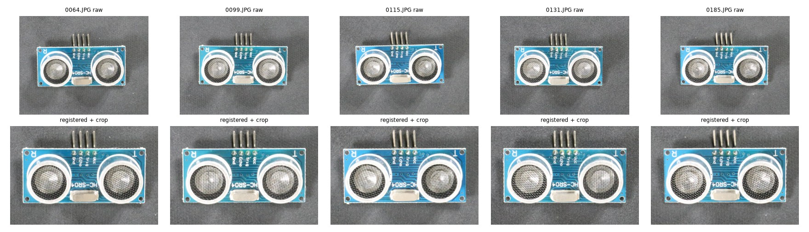
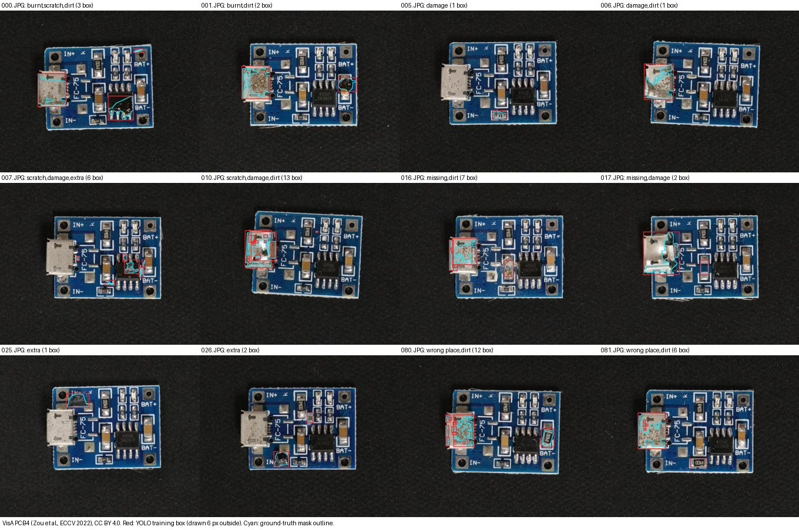

IVAD / PROJECT SHARING SHEET
Exploring PCB Anomaly Detection with CNN and YOLO
A Hands-on Computer Vision PoC
Yu-Chen (Leon) Lai
I built a small PoC to understand visual anomaly detection: prepare public VisA PCB data, explore normal-only CNN modelling, improve and stress-test preprocessing, and train supervised YOLO models. These are complementary explorations on separate board datasets.
Three technical explorations
CNN Baseline
PCB1 / normal-only fitting
- Inspect the data
- Correct orientation & align
- WideResNet-50-2 features
- Per-position Gaussian / Mahalanobis distance
- Anomaly score & heatmap
Detected 72/100 defects (72% recall). Orientation, registration and background interference mattered.
LEARNEDInspect where the anomaly score comes from before adding complexity.
Improve & Stress-Test
PCB2 / PCB3 - separate experiments
- Start from the CNN baseline
- Score inside the board ROI
- Calibrate the threshold
- Test lighting correction
- Evaluate robustness & decide
PCB2: false alarms 13% to 3%; recall stayed 80%. PCB3: some lighting gains, worse false alarms under blur; correction not adopted.
LEARNEDA gain in one condition can create a new failure mode.
Supervised YOLO
PCB4 / defect-labelled training
- Inspect defect annotations
- Convert masks to boxes
- Train YOLOv8s / YOLO11s
- Calibrate image detection
- Analyse failures & confounds
Image recall: YOLOv8s 98%, YOLO11s 95%. One generic defect class. Models were actually trained.
LEARNEDHigher recall here came with brightness confounding, unseen-type generalization limits and imprecise localization.



Exploratory comparison: normal-only CNN fitting and supervised YOLO require different data and labels. The rounds use separate datasets; recall values do not establish architecture superiority. Image-level detection is not proof of accurate defect localization.
What I learned
- Data quality and preprocessing matter.
- Investigate the root cause before increasing complexity.
- Better metrics can introduce unexpected trade-offs.
- Choose models around available data, labels and real objectives.
Project & technical record
Website not yet deployed. Source access requires repository permission.
GitHub source (private; permission required): github.com/leonlaiyc/industrial-visual-anomaly-detection
Frozen score records, protocols, splits, audit and repair chronology are retained in the source. After PCB3 evaluation, an analysis input check was repaired (7dbd302); scores, thresholds and decisions were unchanged. D5 accepted by project owner: 2026-10-11. Overall portfolio acceptance is separate.
Data: VisA, Amazon Science, Zou et al., ECCV 2022, CC BY 4.0. Images modified by alignment, cropping, resizing and overlays. AI-assisted development. No validation on real manufacturing-line images; no production-readiness claim. No endorsement implied. Dataset source 繚 CC BY 4.0